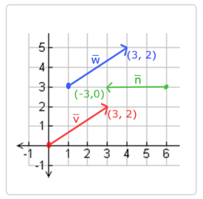
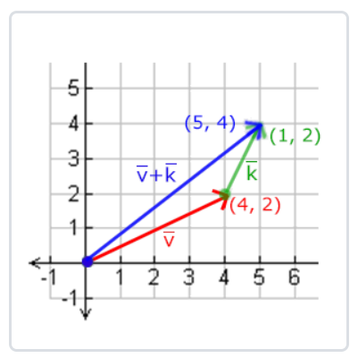
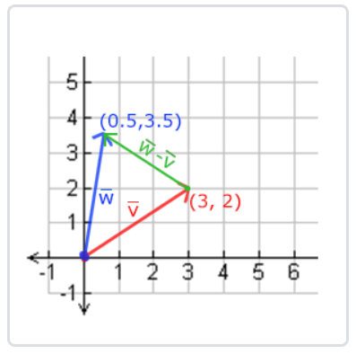
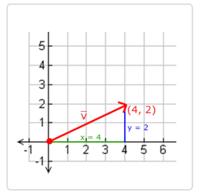
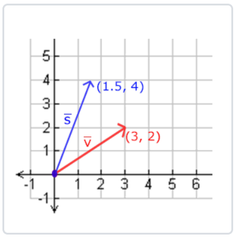
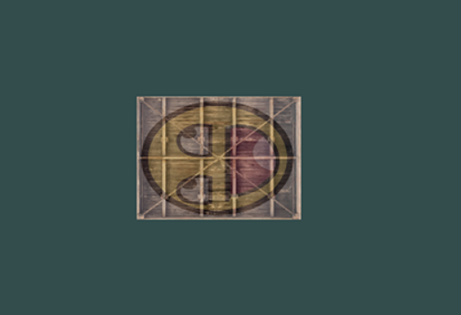

变换
1. 向量
既有大小又有方向的量，称为向量。向量相等的依据：方向相同且大小相等，如下图起点不同的两个向量 $\vec{v}$ 和 $\vec{w}$ 是相等的：
- 
向量数学表示：$\vec{v}=\begin{pmatrix} x \\ y \\ z \end{pmatrix}$
2. 向量运算
2.1 向量与标量
$\begin{pmatrix} x \\ y \\ z \end{pmatrix} + 1 = \begin{pmatrix} x+1 \\ y+1 \\ z+1 \end{pmatrix}$
2.2 向量取反
$-\vec{v}=-\begin{pmatrix} x \\ y \\ z \end{pmatrix}=\begin{pmatrix} -x \\ -y \\ -z \end{pmatrix}$
2.3 向量加减
$\vec{v}+\vec{w}=\begin{pmatrix} 1 \\ 2 \\ 3 \end{pmatrix}+\begin{pmatrix} 4 \\ 5 \\ 6 \end{pmatrix}=\begin{pmatrix} 5 \\ 7 \\ 9 \end{pmatrix}$
- 
$\vec{v}-\vec{w}=\begin{pmatrix} 1 \\ 2 \\ 3 \end{pmatrix}-\begin{pmatrix} 4 \\ 5 \\ 6 \end{pmatrix}=\begin{pmatrix} -3 \\ -3 \\ -3 \end{pmatrix}$
- 
2.4 向量长度和单位向量
向量长度：$||\vec{v}||=\sqrt{x^2+y^2}$
单位向量：$\widehat{n} = \frac{\vec{v}}{||\vec{v}||}$
- 
2.4 向量相乘
- 点乘
$\vec{v} \cdot \vec{w} = ||\vec{v}|| \cdot ||\vec{w}|| \cdot \cos\vartheta$
两个单位向量的点乘结果为两个向量的夹角：$\vec{v} \cdot \vec{w} = 1 \cdot 1 \cdot \cos\vartheta = \cos\vartheta$
几何意义：判断两个向量方向的相似性，即两个向量是否垂直、平行、方向相反等。
点乘计算：$\begin{pmatrix} 1 \\ -1 \\ 0 \end{pmatrix} \cdot \begin{pmatrix} 0 \\ 1 \\ 0 \end{pmatrix} = (0.6 * 0) + (-1 * 1) + (0 * 0) = -1$，反余弦可得两向量夹角180度，方向相反。
- 叉乘
叉乘会生成一个垂直于两个向量的新向量，叉乘可以用来判断两个向量的位置关系，即一个向量是在另一个向量的右边还是左边。
叉乘计算：$\begin{pmatrix} A_x \\ A_y \\ A_z \end{pmatrix} \cdot \begin{pmatrix} B_x \\ B_y \\ B_z \end{pmatrix} = \begin{pmatrix} A_y \cdot B_z-A_z \cdot B_y \\ A_z \cdot B_x-A_x \cdot B_z \\ A_x \cdot B_y-A_y \cdot B_x \end{pmatrix}$
3. 矩阵
矩阵就是一个矩形的数字、符号或表达式数组，矩阵中每一项叫做矩阵的元素。
3.1 矩阵相乘
条件：
- 左侧矩阵的列数与右侧矩阵的行数相等，两个矩阵才能相乘
- 矩阵相乘不遵守交换律，$A \cdot B \not= B \cdot A$
例：
$\left[\begin{matrix} 1 & 2 \\ 3 & 4 \\ \end{matrix}\right] \cdot \left[\begin{matrix} 5 & 6 \\ 7 & 8 \\ \end{matrix}\right]=\left[\begin{matrix} 1 \cdot 5+2 \cdot 7 & 1 \cdot 6+2 \cdot 8 \\ 3 \cdot 5+4 \cdot 7 & 3 \cdot 6+4 \cdot 8 \\ \end{matrix}\right]=\left[\begin{matrix} 19 & 22 \\ 43 & 50 \\ \end{matrix}\right]$
3.2 矩阵乘以向量
矩阵可以用来变换向量：
- 缩放
$\left[\begin{matrix} S_1 & 0 & 0 & 0 \\ 0 & S_2 & 0 & 0 \\ 0 & 0 & S_3 & 0 \\ 0 & 0 & 0 & 1 \\ \end{matrix}\right] \cdot \left(\begin{matrix} x \\ y \\ z \\ w \\ \end{matrix}\right)=\left(\begin{matrix} S_1 \cdot x \\ S_2 \cdot y \\ S_3 \cdot z \\ w \\ \end{matrix}\right)$
- 
- 平移
$\left[\begin{matrix} 1 & 0 & 0 & T_x \\ 0 & 1 & 0 & T_y \\ 0 & 0 & 1 & T_z \\ 0 & 0 & 0 & 1 \\ \end{matrix}\right] \cdot \left(\begin{matrix} x \\ y \\ z \\ 1 \\ \end{matrix}\right)=\left(\begin{matrix} x+T_x \\ y+T_y \\ z+T_z \\ 1 \\ \end{matrix}\right)$
向量的w分量也叫齐次坐标，可以把x、y和z坐标分别除以w坐标从而将其次坐标转换为3D向量。如果w分类为1，则表示的是坐标，如果w分量为0，则表示的是向量。 其次坐标的一个主要用途是将平移操作由仿射变换转换为线性变换。
- 旋转
绕x轴：$\left[\begin{matrix} 1 & 0 & 0 & 0 \\ 0 & \cos\vartheta & -\sin\vartheta & 0 \\ 0 & \sin\vartheta & \cos\vartheta & 0 \\ 0 & 0 & 0 & 1 \\ \end{matrix}\right]$
绕y轴：$\left[\begin{matrix} \cos\vartheta & 0 & \sin\vartheta & 0 \\ 0 & 1 & 0 & 0 \\ -\sin\vartheta & 0 & \cos\vartheta & 0 \\ 0 & 0 & 0 & 1 \\ \end{matrix}\right]$
绕z轴：$\left[\begin{matrix} \cos\vartheta & -\sin\vartheta & 0 & 0 \\ \sin\vartheta & \cos\vartheta & 0 & 0 \\ 0 & 0 & 1 & 0 \\ 0 & 0 & 0 & 1 \\ \end{matrix}\right]$
3.3 矩阵组合
将多个矩阵相乘可以将多个变换组合到一个矩阵中，比如先缩放再平移：$M=Trans \cdot Scale -> Trans \cdot Scale \cdot \vec{v}=M \cdot \vec{v}$，矩阵相乘时，最右边的矩阵会先和向量相乘，所以这边表示的操作是先缩放后平移。
4. GLM
GLM是OpenGL Mathematics的缩写，这是一个OpenGL数学库，点击链接进行下载，然后把头文件的根目录复制到includes文件夹就可以使用了，这里用的是低于0.99版本的GLM。
使用GLM库进行平移操作：
1 |
|
将变换应用到图形中：
1 | // 创建一个矩阵 |
顶点着色器：
1 |
|
运行程序：
- 
让矩形随着时间进行旋转：
1 | glm::mat4 trans; |
矩阵的乘法是从右往左的，因此这里会先绕(0, 0, 1)旋转，然后再平移到屏幕右下角，虽然在逻辑上是先平移后旋转。
运行程序：